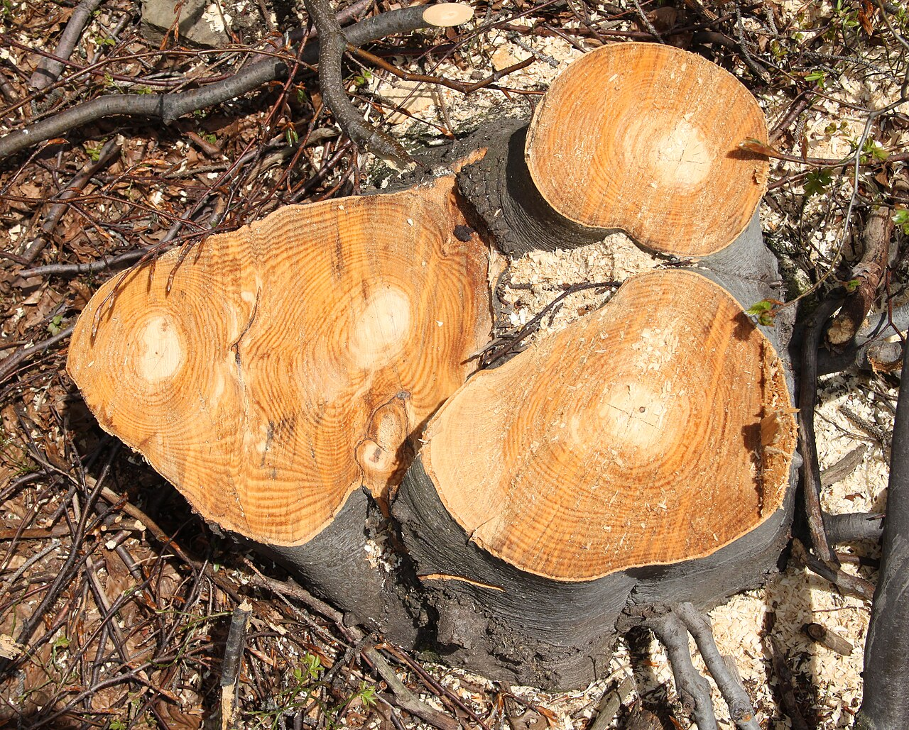

环境因素参与调节植物的生命活动
本期导读
光 · 温度 · 重力 · 整体调控

视频原话 · 导读3 句
- 同学们好！这节课梳理人教版选择性必修一第五章第四节——环境因素参与调节植物的生命活动。9.6s
- 这一节是选择性必修一的最后一节，高考常考光敏色素、春化作用、淀粉体—平衡石假说，以及红光和远红光的实验分析。11.4s
- 我们按六个考点梳理，每个考点都讲清楚怎么考、怎么做。5.5s
光敏色素01#
光的作用：提供能量（光合作用）+ 作为信号（调控生长发育）
光敏色素：一类蛋白质，各部位都有，分生组织中较丰富
- 红光、远红光
- →光敏色素结构改变
- →信号传到细胞核
- →特定基因表达
- →生物学效应
易错
光敏色素是蛋白质，不是光合色素；这里光是信号，不是能量来源
视频原话4 句
- 考点一，光不仅为光合作用提供能量，还作为一种信号，影响、调控植物生长发育的全过程。8.8s
- 植物接受光信号的分子之一是光敏色素，它是一类蛋白质，分布在植物的各个部位，在分生组织的细胞内比较丰富。10.8s
- 光敏色素主要吸收红光和远红光。受到光照射时，光敏色素的结构发生变化，这一信息经过信息传递系统传导到细胞核内，影响特定基因的表达，从而表现出生物学效应。16.6s
- 易错：光敏色素是蛋白质，和光合色素不同；在这里，光是一种信号，而不是能量来源。9.0s
光与萌发、开花02#
种子萌发
有些种子需要光才能萌发
例：莴苣、烟草的种子
例：莴苣、烟草的种子
开花：与昼夜长短有关
短日照开花：菊花
长日照开花：小麦
考法
人工延长或缩短光照时间，控制开花时间，如让菊花提前或推迟开花
视频原话4 句
- 考点二，光对种子萌发和开花的影响。4.0s
- 有些种子需要在有光的条件下才能萌发，比如莴苣、烟草的种子。6.6s
- 很多植物的开花与昼夜长短有关：比如菊花在短日照条件下开花，而小麦在长日照条件下开花。9.5s
- 考法：生产上常用人工延长或缩短光照时间的方法，控制植物的开花时间，比如让菊花提前或推迟开花。10.2s
温度：春化与年轮03#
春化作用
经历一段时间的低温诱导，促使植物开花
例：冬小麦、冬大麦
例：冬小麦、冬大麦
年轮
春夏：分裂快、细胞大 → 颜色浅
秋冬：分裂慢、细胞小 → 颜色深
秋冬：分裂慢、细胞小 → 颜色深
考法
冬小麦春季播种 → 未经低温 → 不能正常开花结实；年轮体现温度对生长速度的影响
视频原话4 句
- 考点三，温度参与调节植物的生长发育。4.2s
- 有的植物需要经过一段时间的低温之后才能开花，这种经历低温诱导促使植物开花的作用，叫做春化作用，比如冬小麦、冬大麦。11.7s
- 树木的年轮也和温度有关：春夏季细胞分裂快、细胞体积大，形成颜色较浅的带；秋冬季细胞分裂慢、细胞体积小，形成颜色较深的带。13.1s
- 考法：冬小麦如果在春季播种，没有经历低温，就不能正常开花结实；年轮的形成，体现了温度对植物生长速度的影响。11.2s
重力与平衡石04#
平衡石细胞：● 淀粉体沉在下侧
重力信号 → 运输生长素的信号 → 生长素分布不均衡 → 调节生长方向
感受重力：富含淀粉体的平衡石细胞
方向改变 → 淀粉体沿重力方向沉降 → 信号分子改变 → 生长素不对称分布
易错
重力通过平衡石细胞转换成运输生长素的信号；太空失重时根失去向地性
视频原话5 句
- 考点四，重力是调节植物生长方向的重要环境因素，根的向地生长、茎的背地生长，都是在重力的调节下形成的。10.5s
- 植物的根、茎中有感受重力的物质和细胞，能将重力信号转换成运输生长素的信号，造成生长素分布不均衡，从而调节生长方向。12.4s
- 目前比较认可的是淀粉体—平衡石假说：植物对重力的感受，是通过一类富含淀粉体的细胞，也就是平衡石细胞来实现的。11.1s
- 当植物的方向发生改变，平衡石细胞中的淀粉体就会沿着重力方向沉降，引起一系列信号分子的改变，使生长素沿着重力刺激的方向不对称分布。13.4s
- 易错：重力不是直接把生长素“压”下去，而是通过平衡石细胞转换成运输生长素的信号；在太空失重的条件下，根会失去向地性。12.1s
三者共同调控05#
考法
环境因素影响激素的产生和分布，也通过光敏色素等影响基因表达；激素又影响基因表达
视频原话4 句
- 考点五，植物生长发育的整体调控。3.7s
- 植物生长发育的调控，是由基因表达调控、激素调节和环境因素调节共同完成的。7.8s
- 在个体层次上，植物的生长、发育、繁殖和休眠，实际上是植物响应环境变化，调控基因表达以及激素的产生和分布，最终表现在器官和个体水平上的变化。15.3s
- 考法：三者关系常以示意图出题：环境因素既能影响激素的产生和分布，也能通过光敏色素等受体影响基因表达；激素又反过来影响基因表达。13.8s
莴苣种子萌发06#
| 组别 | 照射处理 | 萌发率（约） |
|---|---|---|
| 第1组 | 红 | 70% |
| 第2组 | 红 → 远红 | 6% |
| 第3组 | 红 → 远红 → 红 | 74% |
| 第4组 | 红 → 远红 → 红 → 远红 | 6% |
| 第5组 | 红 → 远红 → 红 → 远红 → 红 | 76% |
取决于最后一次照射的光
光敏色素在两种形式间相互转化：
吸收红光 → 有活性，促进萌发
吸收远红光 → 无活性
吸收红光 → 有活性，促进萌发
吸收远红光 → 无活性
解题方法
看每组最后一次照射：以红光结尾 → 萌发率高；以远红光结尾 → 萌发率低
视频原话5 句
- 考点六，实验分析：红光、远红光与莴苣种子的萌发。5.7s
- 用红光照射莴苣种子，种子萌发；红光之后再用远红光照射，种子不萌发。7.5s
- 红光和远红光交替照射时，种子能否萌发，取决于最后一次照射的是哪种光：最后是红光就萌发，最后是远红光就不萌发。11.2s
- 原因是光敏色素吸收红光和远红光后，会在两种形式之间相互转化：吸收红光后转变为有活性的形式，促进萌发；吸收远红光后又转变为无活性的形式。14.6s
- 解题方法：看表格中每组最后一次照射的光：以红光结尾，萌发率高；以远红光结尾，萌发率低。9.6s
易错速查✓
先自己判断，再点按钮查看对错与解析。
- 1光敏色素是一类蛋白质说法正确。
- 2光对植物的作用只是为光合作用提供能量说法错误：光还作为信号调控生长发育
- 3冬小麦需要经历春化作用才能开花说法正确。
- 4年轮中颜色较深的带在春夏季形成说法错误：在秋冬季形成
- 5太空失重时根仍能向地生长说法错误：失重时根失去向地性
- 6红光、远红光交替照射，萌发取决于最后一次照射的光说法正确。
光、温度、重力，三大环境信号一网打尽！
视频原话 · 易错速查5 句
- 最后，用六道判断题检验一下。3.6s
- 光敏色素是一类蛋白质？对。光对植物的作用只是为光合作用提供能量？错，光还作为信号调控生长发育。11.4s
- 冬小麦需要经历春化作用才能开花？对。年轮中颜色较深的带在春夏季形成？错，在秋冬季形成。11.1s
- 太空失重时根仍能向地生长？错，失重时根失去向地性。红光、远红光交替照射，萌发取决于最后一次照射的光？对。12.7s
- 六个考点串起来：光通过光敏色素传递信号，温度带来春化和年轮，重力靠平衡石细胞感受，三者和激素、基因表达共同调控植物。到这里，选择性必修一就全部梳理完了！我们下期再见！18.6s
图片来源
图片来源：Wikimedia Commons —— Crusier《Fagus sylvatica cross section Silesian Beskids》CC BY-SA 3.0
Photo: Crusier, CC BY-SA 3.0